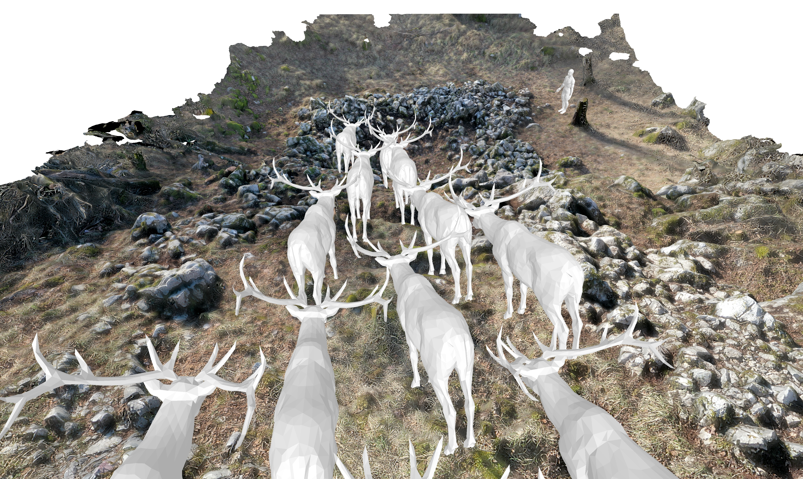
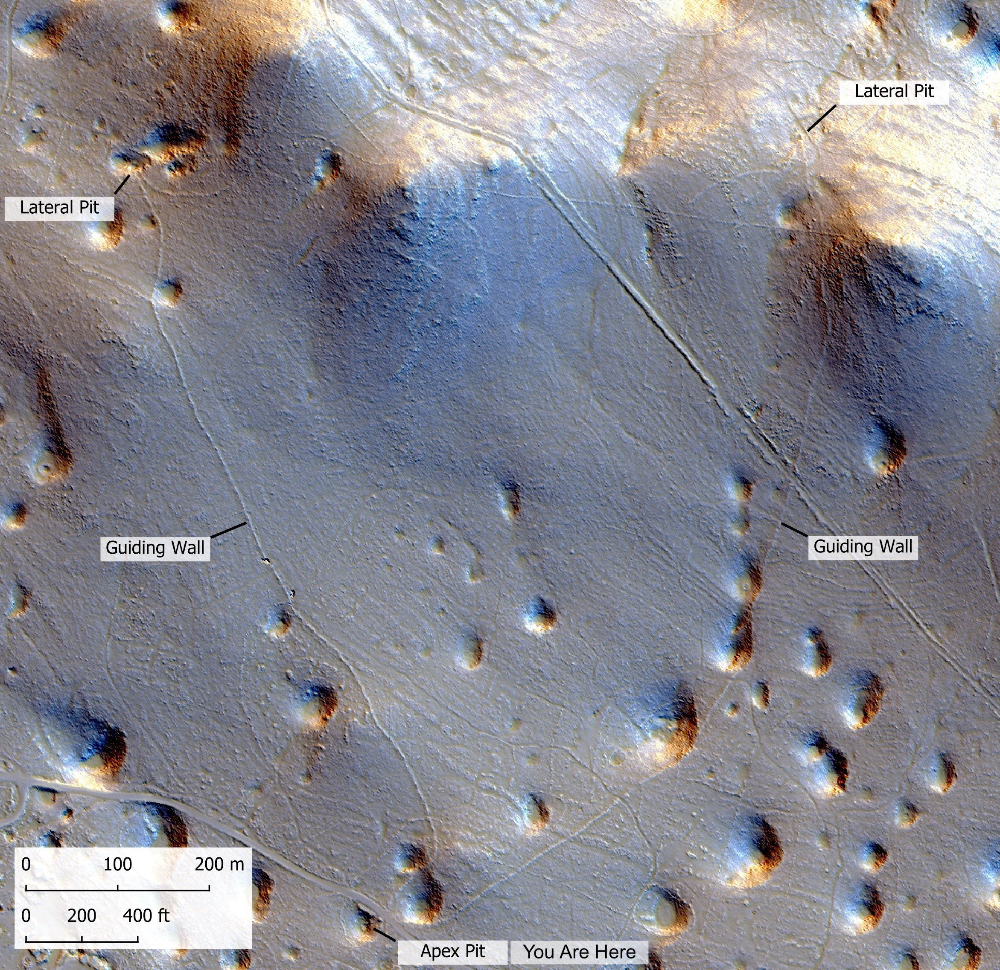
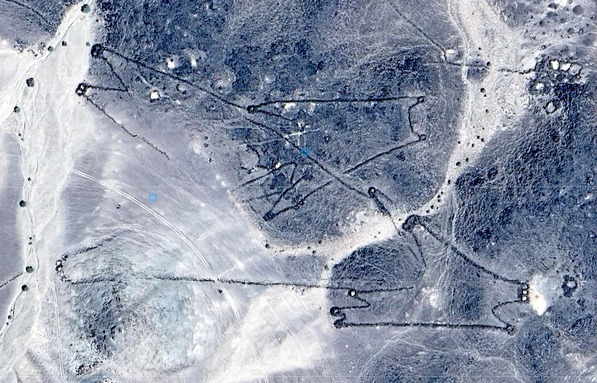

Kras · Carso · Karst
Thousands of years ago, this sinkhole marked the end of a kilometre-long funnel built to capture herds of deer. Pred tisočletji se je v tej vrtači zaključil več kilometer dolg lijak, zgrajen za lov na črede jelenov. Migliaia di anni fa, questa dolina segnava la fine di un imbuto lungo un chilometro, costruito per catturare branchi di ungulati.
What you see Kaj vidite Che cosa vedete

The stone enclosure below you is where animals were trapped and killed. From the ridge, two long stone walls converge toward this point, using the natural slope to guide a whole herd, possibly red deer on their autumn migration, into a space from which there was no escape. Kamnita struktura pod vami je prostor, kjer so bile živali ujete in pobite. Z grebena se proti tej točki stekata dva dolga kamnita zidova, ki usmerjata gibanje celotne črede, verjetno jelenov na jesenskih selitvah, v prostor, iz katerega ni bilo izhoda. La struttura in pietra davanti a voi è il luogo dove gli animali venivano catturati e abbattuti. Dal crinale convergono verso questo punto due lunghi muri in pietra, che guidavano il movimento del branco braccato. Probabilmente si trattava di cervi, che venivano cacciati durante le migrazioni autunnali.

The guiding walls begin far apart across the slope and gradually converge towards this doline. Built from dry-stacked limestone blocks, roughly a metre wide and a metre high, they follow every fold of the landscape, directing animal movement towards the trap. Constructing and maintaining a system of this scale required the effort of an entire community. Zidova se začneta na grebenu, daleč narazen, in se postopoma približujeta tej vrtači. Zgrajena sta iz na suho zloženih apnenčastih kamnov, približno meter široka in meter visoka. Sledita obliki pokrajine ter usmerjata gibanje živali proti pasti. Gradnja in vzdrževanje sistema takšnega obsega sta zahtevala skupen napor celotne skupnosti. I due muri iniziano sul crinale, molto distanti tra loro, e convergono gradualmente verso questa dolina. Costruiti con blocchi calcarei sovrapposti a secco, larghi circa un metro e alti un metro, seguono ogni piega del terreno e indirizzano il movimento degli animali verso la trappola. La costruzione e la manutenzione di un sistema di tale portata richiedevano lo sforzo collettivo di un'intera comunità.
Wider context Širši kontekst Un contesto più ampio
These are the first prehistoric hunting structures of this kind discovered in Europe. Similar systems, known as desert kites, were built across the Near East and North Africa at least 9,000 years ago to capture gazelles. Comparable V-shaped hunting drives are also known from the Americas. To so prve prazgodovinske lovske strukture te vrste, odkrite v Evropi. Podobni sistemi, znani kot puščavski zmaji (desert kites), so bili na Bližnjem vzhodu in v Severni Afriki zgrajeni že pred najmanj 9.000 leti za lovljenje gazel. Primerljive lovske strukture v obliki črke V poznamo tudi v Amerikah. Si tratta della prima scoperta in Europa di un'ampia struttura di caccia risalente alla preistoria. Strutture simili, note come desert kites ("aquiloni del deserto"), vennero costruiti nel Vicino Oriente e nel Nord Africa almeno 9.000 anni fa per catturare gazzelle. Costruzioni monumentali di caccia comparabili, a forma di V, sono note anche nelle Americhe.

The presence of four traps on the Karst shows that this was not an isolated undertaking. Walls had to be built and maintained, animal movements understood, and people brought together to hunt cooperatively. These traps were not simply hunting devices. They were part of a way of life. Na Krasu smo odkrili štiri pasti, kar kaže, da ni šlo za osamljen podvig. Zidove je bilo treba graditi in vzdrževati, razumeti gibanje živali ter povezati ljudi v skupen lov. Te pasti niso bile zgolj lovske naprave, odražale so znanje o pokrajini, gibanju živali in sodelovanju ljudi. La scoperta di quattro trappole sul Carso indica che questa pratica non rappresentava un fenomeno isolato. La realizzazione e la manutenzione delle strutture richiedevano competenze tecniche, una conoscenza dettagliata dei percorsi e del comportamento degli animali e una significativa capacità di coordinamento tra i partecipanti alla caccia. Più che semplici dispositivi di cattura, queste trappole costituiscono una testimonianza della profonda comprensione dell'ambiente, del comportamento animale e delle forme di cooperazione sviluppate dalle comunità locali.
The research Raziskava La ricerca
For centuries, the walls remained hidden beneath vegetation and were mistaken for ordinary field boundaries. Airborne laser scanning (LiDAR) revealed the full extent of the trapping system. The discovery was published in 2025 in Proceedings of the National Academy of Sciences. Zidovi so stoletja ostajali skriti pod rastjem. Lasersko skeniranje iz zraka (LiDAR) je razkrilo celoten obseg lovskega sistema. Odkritje je bilo leta 2025 objavljeno v reviji Proceedings of the National Academy of Sciences. Per secoli questi muri sono rimasti nascosti dalla vegetazione. Grazie alla scansione laser aerea (LiDAR) è stato possibile rivelare l’intera estensione del sistema di caccia. La scoperta è stata pubblicata nel 2025 sulla rivista Proceedings of the National Academy of Sciences.
The trap fell out of use around 3,500 years ago, but it may have been built much earlier. Ongoing research aims to determine its age more precisely. Past je bila pred približno 3.500 leti že opuščena, a je bila morda zgrajena veliko prej. Raziskave, s katerimi skušamo natančneje določiti njeno starost, še potekajo. La trappola venne abbandonata circa 3.500 anni fa, ma potrebbe essere stata costruita molto prima. Le ricerche per determinarne con maggiore precisione l'età sono tuttora in corso.